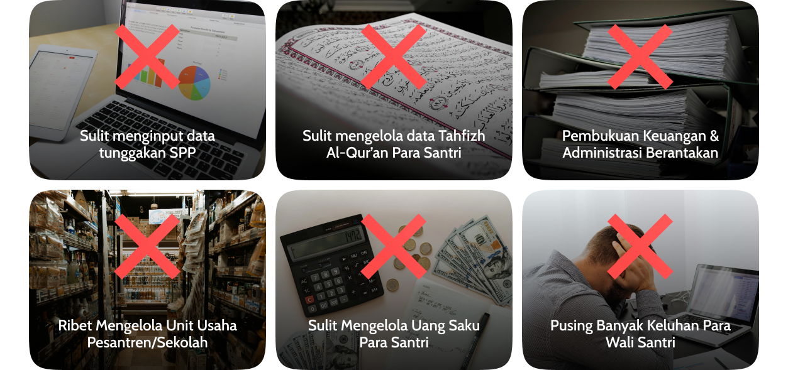

Pondok Pesantren Sipond Mencakup Aplikasi Keuangan Santri, Aplikasi Data Santri, Aplikasi Tata Usaha/Administrasi, Aplikasi Absensi, dll. Terintegrasi menjadi satu aplikasi!
Pelajari lebih lanjut >Kami menawarkan solusi inovatif untuk mempermudah pengelolaan data pondok pesantren.
Kami memperkenalkan aplikasi AdzSys, yang terdiri dari dua bagian. Pertama, aplikasi web-based yang dapat diakses melalui browser untuk admin pondok pesantren, meliputi tata usaha, kesantrian, tahfidz, dan keuangan. Kedua, aplikasi Android untuk walisantri yang tersedia di Playstore.
AdzSysjuga ideal digunakan di Sekolah Islam sebagai aplikasi spp sekolah, aplikasi keuangan sekolah atau juga aplikasi administrasi sekolah karna secara umum pengelolaan administrasi dan keuangan sekolah lebih simple daripada pondok pesantren.
Kami membereskan berbagai masalah manajemen pondok langsung dalam satu aplikasi!
AdzSys berkomitmen untuk berkolaborasi bersama dengan pondok pesantren dan sekolah Islam di Indonesia demi kemajuan bersama, menjadikan pondok yang lebih unggul, lebih maju/modern, memiliki manajemen yang bagus, dan membangun keakraban yang baik dengan walisantri.